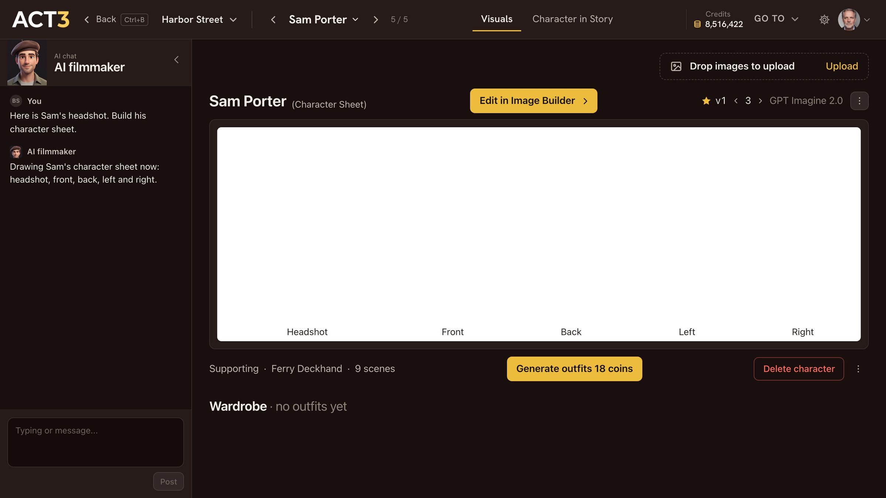

Step 6 of 8
Read the five-view character sheet
The new character's page opens with the five-view character sheet. Your headshot sits on the left, then front, back, left and right. Check it is one person in every view.

Headshot (from your photo), Front, Back, Left, Right: the same person in every shot of the film.
How to read the sheet
The sheet is the character's casting photo and costume test in one picture. From left to right:
- Headshot: shoulders up, built from the photo you uploaded. This is the face every shot keeps.
- Front: the full figure facing camera. Height, build, costume, shoes.
- Back: the hair from behind and the back of the costume, for shots that follow the character.
- Left and Right: both profiles, for over-the-shoulder coverage and side angles.
What to check
- Likeness: does the headshot look like your photo? Same eyes, nose, jawline.
- Consistency: the same person in all five views, with the same hair and the same clothes.
- Costume: right for the character's first scenes. Other outfits go in the wardrobe below.
Your decision: keep it, or change it
It looks right? You are done: the character is ready for the storyboard and the shots.
Something to change (the hair, the costume, the age)? Click Edit in Image Builder ›. Step 7 opens it.
The face is wrong? Drop a better photo on Drop images to upload at the top of the page, and the sheet is drawn again from it.